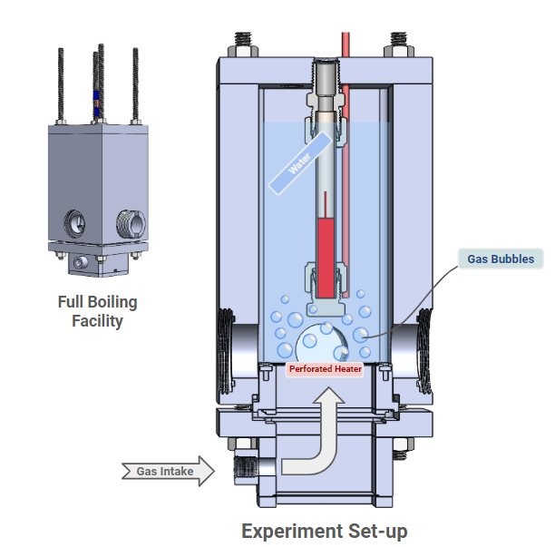

Small-scale Pool Boiling Facility

Design methodology
Experiment Design
Technical communication
LabThe Red Lab, MIT
ProgramMIT Energy Initiative (MITEI) Summer Cohort 2024
TimelineSummer 2024
Tools
SOLIDWORKS
MATLAB
SLA 3D printing
I designed and fabricated an experiment vessel to investigate how bubble agitation affects the heat transfer coefficient of water. Boiling is mimicked with a perforated heater and gas input, and the vessel is built to be filmed by infrared and high-speed cameras at the same time. The project was selected for the MIT Energy Initiative's 2024 Summer Cohort, and I presented my summer progress at the MITEI Annual Research Conference.
Context/Motivation
During the summer after my freshman year, I worked as an undergraduate researcher in MIT's Red Lab. I was tasked with designing and fabricating a pool boiling facility that could mimic the bubbling seen in boiling, so the lab could isolate how bubble agitation affects the heat transfer coefficient of water.
Problem Framing
The facility had to be accessible to infrared and high-speed cameras simultaneously for data collection, while keeping water and gas from leaking into each other. I split the assembly into two main sections: a pool facility on top, with windows on each side so recording could happen from whichever angle was most convenient, and a gas compartment below.
Process
Adapting the previous facility
The lab's previous pool boiling facility could already record with ultra-high-speed and infrared cameras, but it couldn't generate bubbles. The challenge was adding bubble generation without giving up either recording capability.
Sizing the bubble generation
I wrote two MATLAB scripts to size the system. The first found the critical gas flow rate — the flow needed for bubbles to nucleate in a way that mimics boiling. The second modeled how needle radius affects bubble radius; because the relationship was fairly linear, I let manufacturing feasibility set the needle radius.
Gas compartment and heater
Gas enters the compartment through an NPT-threaded nozzle, whose tapered thread seals with minimal leakage. A sapphire bottom plate closes the compartment, and the heater is perforated sapphire, so gas can pass through it while infrared cameras still see through. O-rings and gasket sealant keep water and gas separated throughout the assembly.
Room for Improvement
[NEEDS INPUT: leaks, fabrication issues, anything you'd redesign.]
Outcome
- Selected for the MITEI Summer Cohort 2024
- Flash talk and poster at the MITEI Annual Research Conference
- Captured high-speed footage of bubble formation
- [NEEDS INPUT: any quantitative results, or what the lab used the facility for after you.]
Reflection
[NEEDS INPUT — the MITEI workshops on communicating research could be a good thread here.]